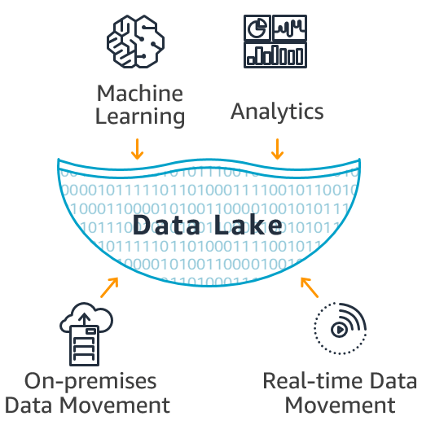

Artificial Intelligence
Artificial Intelligence (AI) is a field of computer science that studies the creation of systems capable of performing tasks that require human intelligence, such as reasoning, learning, and decision-making. This course provides a fundamental understanding of AI principles, techniques, and applications, combining both theory and hands-on practice with Machine Learning (ML).
Learning Objectives
- Understand the fundamentals of Artificial Intelligence and its societal impact.
- Explain the core concepts of AI and its applications.
- Explore machine learning techniques, neural networks, and natural language processing.
- Apply AI algorithms to real-world problems.
- Evaluate advantages, limitations, and ethical considerations in AI.
- Design and evaluate basic machine learning models.
- Implement AI algorithms using tools such as Python and TensorFlow.
- Present a final project applying the acquired knowledge.
Course Outline
-
Topic 1: Fundamentals of Artificial Intelligence
- Introduction to AI
- History and evolution of AI
- Types of AI: weak and strong
- Search algorithms
- AI ethics
- Applications across industries
- Introduction to Intelligent Agents
- Rule-Based, Goal-Based, and Learning Agents
- Multi-Agent Systems
- Practical examples
- Introduction to Big Data and Data Lakes
- Data preparation and cleaning
- Tools for data engineering
- Practical cases
- ML project methodologies
- Problems with insufficient or biased data
- Model validation and hyperparameter tuning
- Practical examples
- Simple and multiple linear regression
- Decision Trees, Random Forest, KNN, XGBoost
- Logistic regression
- Hands-on exercises with real datasets
- Concepts and RL algorithms
- Implementation of practical projects
- Industry case studies
Topic 2: Intelligent Agents
Topic 3: Data Engineering
Topic 4: Machine Learning Challenges
Topic 5: Machine Learning Models I & II
Topic 6: Reinforcement Learning


Incorporating GPU-accelerated artificial intelligence tools significantly enhances learning in this course, enabling students to train machine learning and deep learning models in real time, explore high-dimensional data through advanced visualizations, and experiment with large datasets using powerful parallel computation. GPU-enabled environments also allow the implementation of complex neural architectures, reinforcement learning simulations, and natural language processing pipelines with immediate feedback. Intelligent tutors powered by AI can assess student performance, identify conceptual errors in algorithms such as regression, decision trees, or reinforcement learning, and provide tailored explanations. This modern computational ecosystem bridges the gap between theory and professional practice, preparing students to work with cutting-edge AI technologies used across industry and research.
Instructor
Ing. José Alejandro Rodriguez Zegada
Artificial Intelligence Instructor